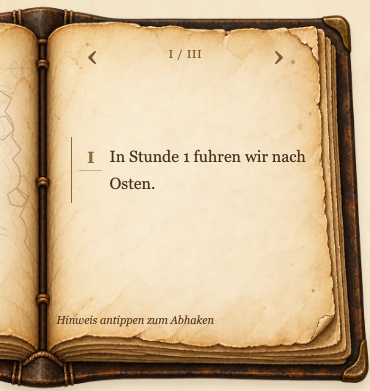
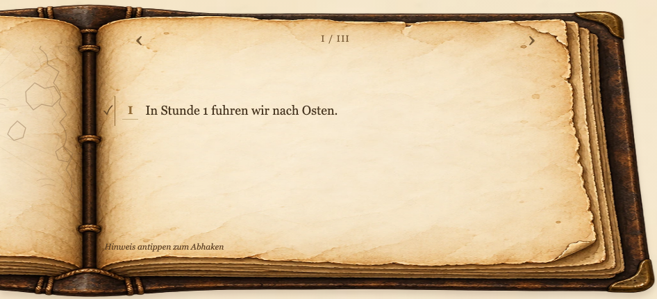
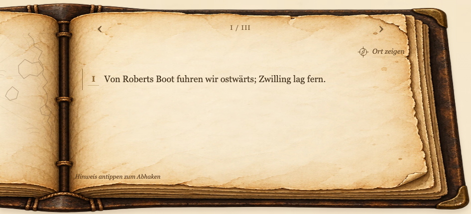
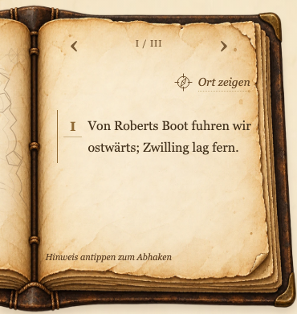
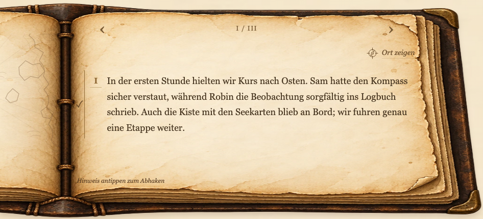
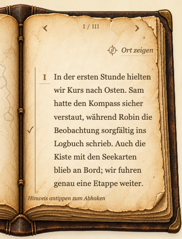
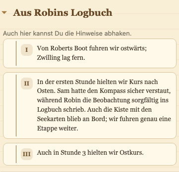
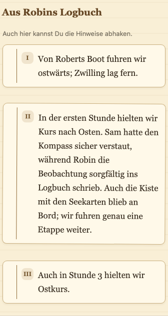
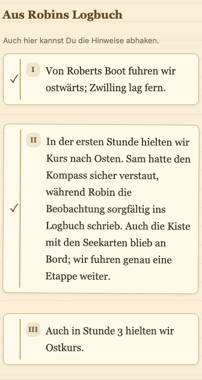

Logbuch · freigegebene Buchfassung und Hinweisübersicht
24. November 2026 · Echte Chromium-Screenshots auf Basis des aktuellen main, Desktop 1440 × 1080 und Mobil 390 × 844 CSS-Pixel. Acht Buchzustände, zwei Langtextansichten und vier Ansichten der Hinweisübersicht. Die verlinkten Originale wurden visuell geprüft.
Unveränderte freigegebene Buchfassung · Vorherige Nachkorrektur · Erste Screenshot-Abnahme · Regressionen und main-Vergleich . Die bisherigen Nachweise bleiben erhalten.
Die freigegebene Buchgestaltung bleibt erhalten. Die Hinweisübersicht behält ihre Überschrift „Aus Robins Logbuch“ und verwendet denselben schmalen Tintenstrich mit handgezeichnetem, vertikal mittigem Häkchen. Nummer und Text bleiben beim Abhaken voll lesbar und an derselben Stelle. Änderungen in Buch und Übersicht erscheinen sofort in beiden Ansichten. Die Übersicht erhält weder Ortsaktionen noch Blätternavigation.
Offen · ohne Ortsreferenz
Desktop · Die schmale Randmarkierung hält ihren Platz frei. 
Mobil · Blättern am oberen Papierrand.
Abgehakt · ohne Ortsreferenz

Desktop · Nur das handgezeichnete Randhäkchen kommt hinzu. Mobil · Nummer und Text bleiben vollständig lesbar.
Offen · mit Ortsreferenz

Desktop · „Ort zeigen“ als Tintennotiz im oberen Seitenrand. 
Mobil · Ortsaktion und Hinweis bleiben auf dem Papier.
Abgehakt · mit Ortsreferenz
Desktop · Ortsaktion bleibt auch nach dem Abhaken erreichbar. Mobil · Gleiches Layout in beiden Bearbeitungszuständen.
Mehrzeiliger Hinweis · dynamischer Tintenstrich

Desktop · Tintenstrich über alle Textzeilen, Häkchen in der Mitte. 
Mobil · Der Strich wächst mit dem Text; Ortsaktion und Text überlagern sich nicht.
Hinweisübersicht · offen und mit langem Hinweis

Desktop · Überschrift erhalten; alle Hinweise offen. 
Mobil · Langtext bleibt vollständig erreichbar und lesbar.
Hinweisübersicht · abgehakt und weiterhin voll lesbar
Desktop · Nur die Randhäkchen ändern sich; keine Durchstreichung oder reduzierte Deckkraft. 
Mobil · Einzeilige und lange Hinweise verwenden dieselbe Statussemantik.
Explizite Prüfung: Der Textbeginn liegt bei 144 CSS-Pixeln ab oberem Buchrand auf Desktop und bei 142 auf Mobil. Derselbe Text wurde mit und ohne Ortsreferenz sowie offen und abgehakt verglichen: exakt gleiche vertikale Position. Größe, Schrift, Farbe und Deckkraft ändern sich beim Abhaken ebenfalls nicht. Der Tintenstrich und das mittige Häkchen behalten ihre bisherige Gestaltung.
Layout bei 320, 390, 620, 768, 900 und 1440 Pixeln geprüft, einschließlich langem Hinweistext: mindestens 44 Pixel große Trefferflächen, keine Kollision zwischen Ortsnotiz, Pfeilen und Seitenzahl, keine Überlagerung des Textes, kein seitlicher Überlauf. Die Ortsnotiz liegt absolut positioniert außerhalb des Textflusses. Die vollständige relevante Bedienmatrix wurde in Chromium und WebKit geprüft; aktuelle Einzelresultate und der Vergleich mit unverändertem main stehen im verlinkten Prüfbericht. Neue Tests erhalten keine zusätzlichen Skips oder Retries.
Die Ortsreferenz-Bilder verwenden eine isolierte Präsentations-Testvorlage mit zwei explizit benannten Orten. Rätsellogik und reguläre Rätseldaten werden dafür nicht geändert. Bildaufnahme: npx playwright test tests/browser/logbook-skeuomorphic.spec.mjs tests/browser/logbook-overview.spec.mjs --project=chromium. Die CI behält die Logbuchbilder in ihren regulären UI-Artefakten.